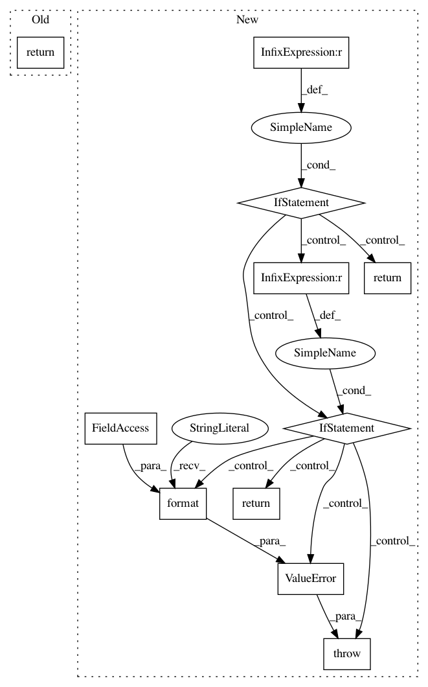

37651fcb98ae564f95c28fbbe3401f48731f7a0d,deepvariant/realigner/window_selector.py,,_candidates_from_reads,#Any#Any#Any#Any#,42
Before Change
counts_vec = cpp_window_selector.candidates_from_allele_counter(
allele_counter)
return {
expanded_region.start + i: count
for i, count in enumerate(counts_vec)
if count > 0 and ranges.position_overlaps(
region.reference_name, expanded_region.start + i, region)
}
def _candidates_to_windows(config, candidate_pos, ref_name):
"Process candidate positions to determine windows for local assembly.
After Change
allele_counter.add(read)
model_type = config.window_selector_model.model_type
if model_type == realigner_pb2.WindowSelectorModel.VARIANT_READS:
return _variant_reads_threshold_selector(
allele_counter, config.window_selector_model.variant_reads_model,
region, expanded_region)
elif model_type == realigner_pb2.WindowSelectorModel.ALLELE_COUNT_LINEAR:
return _allele_count_linear_selector(
allele_counter, config.window_selector_model.allele_count_linear_model,
region, expanded_region)
else:
raise ValueError("Unknown enum option "{}" for "
"WindowSelectorModel.model_type"
.format(config.window_selector_model.model_type))
def _variant_reads_threshold_selector(allele_counter, model_conf, region,
expanded_region):
Returns a list of candidate positions.
In pattern: SUPERPATTERN
Frequency: 3
Non-data size: 11
Instances
Project Name: google/deepvariant
Commit Name: 37651fcb98ae564f95c28fbbe3401f48731f7a0d
Time: 2018-07-30
Author: no-reply@google.com
File Name: deepvariant/realigner/window_selector.py
Class Name:
Method Name: _candidates_from_reads
Project Name: uber/petastorm
Commit Name: 144c6c7c2a60531ed72afe07cc575c261be9ec2f
Time: 2018-08-16
Author: yevgeni@uber.com
File Name: petastorm/codecs.py
Class Name: CompressedImageCodec
Method Name: decode
Project Name: datascienceinc/Skater
Commit Name: 5f3e7ef013b7cecda55d9dd7fcc8f55cb01eee1b
Time: 2017-04-21
Author: aikramer2@gmail.com
File Name: pyinterpret/data/dataset.py
Class Name: DataManager
Method Name: __getitem__